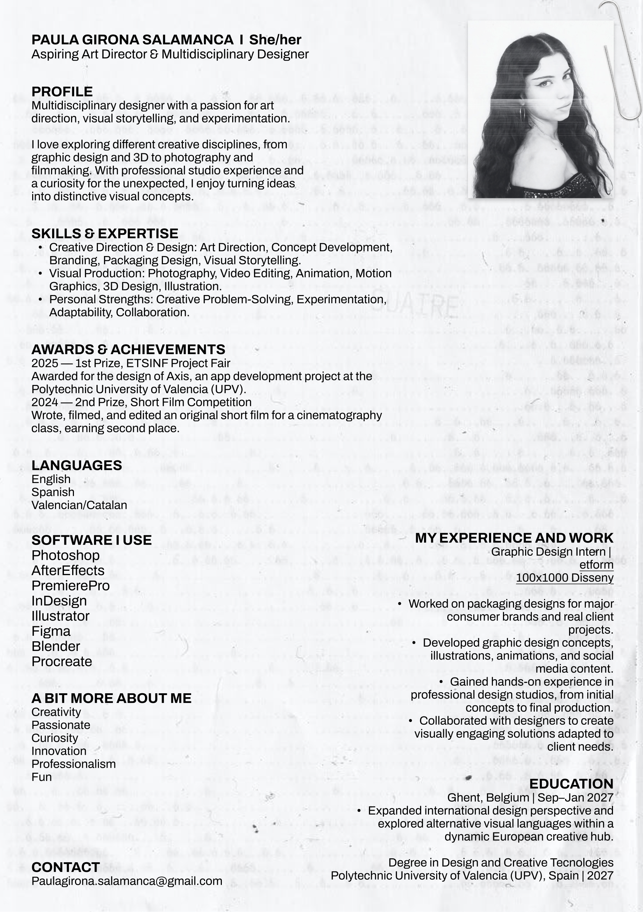
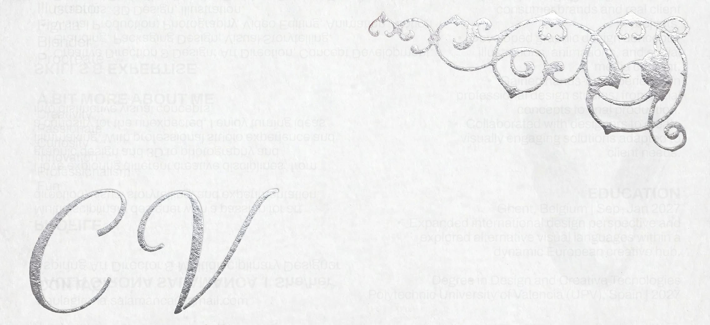

Hi, I’m Paula.
A creative mind, with too many tabs open...
I've cried watching films. Not because of a heartbreaking scene, but because of the way a shot was composed, the lighting, the colors, or how perfectly everything came together.
I’m a 21-year-old Design and Creative Technologies student on a mission to become an art director in the music industry. Cinema is the language I can’t stop analyzing.
How I Think & Create
My strength lies in taking unexpected concepts and turning them into immersive stories.
My style? Still evolving, and I like it that way. I've explored everything from clean minimalism to bold colors, rich textures, and maximalism. I don't believe in sticking to one aesthetic. Every artist has their own personality, and I think the visuals should reflect that, not mine.

What I Bring to the Table
-
I.
Holistic World-Building
I don't just design a single good-looking image; I build entire visual ecosystems—from vinyl packaging and photography direction to styling, makeup, and music video direction.
-
II.
Hands-On Experience
I've worked at two design studios in Spain, creating packaging for major brands and gaining experience with real clients. I also wrote, filmed, and edited a short film for my cinematography class that went on to win an award. I love bringing ideas to life, whether it's through design or filmmaking.
-
III.
Fresh Digital Intuition
A young perspective tuned into what captures attention online, paired with the kind of obsessive enthusiasm that makes it hard to put the work down.


click to unfold
Let's Create Something Together
Whether you’re an emerging artist looking for your visual identity or a creative team working on your next project, I’d love to connect.